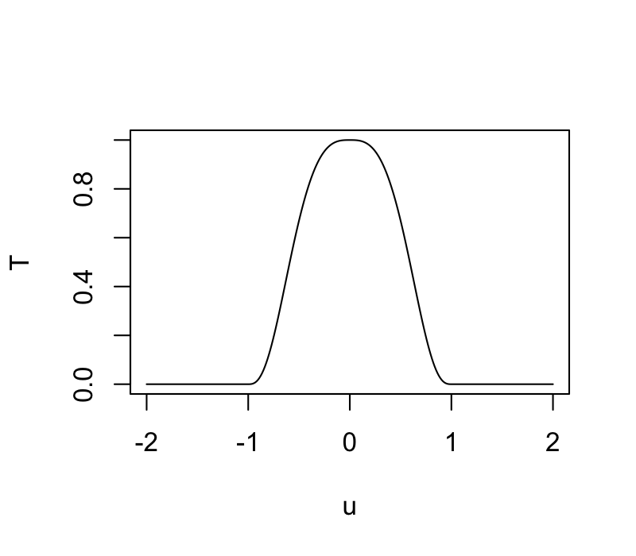

Stat 470/670 Lecture 8: Flexible modeling for
bivariate data
Julia Fukuyama
Today
- Review linear regression/parametric smoothers
Regression review
Task 1: How do we use multiple regression to fit non-linear functions
of predictors?
Task 2: How can we use weights in regression to do local fits?
Generalizations of the regression problem: Weighted least
squares
If we have more faith in some points than others, or if we simply
want to exclude some points, we can perform weighted linear
regression.
Let \(w_i\), \(i = 1,\ldots, n\) be non-negative
values.
In weighted regression, we find \(\beta_0,
\ldots, \beta_p\) to minimize
\[
\sum_{i=1}^n w_i (y_i - (\beta_0 + \beta_1 x_{i1} + \cdots + \beta_p
x_{ip}))^2
\]
Or, in matrix notation: \[
\|\mathbf W^{1/2} (\mathbf y - \mathbf X \mathbf \beta)\|_2^2
\] where \(\mathbf W^{1/2}\) is
an \(n \times n\) diagonal matrix with
\(w_i^{1/2}\) as the \(i\)th diagonal element.
Properties:
Setting \(w_i = 0\) is
equivalent to omitting the \(i\)th data
point from the analysis.
Setting all of the \(w_i\)’s
equal to \(1\), or all the equal to the
same positive value, leads to the same coefficient estimates as standard
linear regression.
Heuristically, points with higher values of \(w_i\) have higher “weight” in the
regression estimation: the line is penalized more for deviating from
those points, and so the fitted line will tend to track points with high
weights more closely than points with low weights.
References
If you feel like you need to brush up on this, a good reference is
Weisberg, Applied Linear Regression.
- Section 3.4 of Weisberg describes the matrix notation version of
multiple regression.
- Chapter 6 of Weisberg describes polynomial regression and indicator
matrices for factor variables.
Smoothing
Reading: Cleveland pp. 91-110
Why do we want to smooth?
If we have a lot of data/noise, the smoother allows us to see
what we can’t in a scatterplot of the raw data.
If we want to compare multiple sets of points, the smoother
simplifies the description and allows us to make the comparison between
the “main effects” in the data without our eye being distracted by the
noise.
Non-EDA: If we want to predict or estimate true underlying values
from noisy data, smoothers often help. Remember though, if this is your
purpose, you should still do the exploratory analysis to decide what
type of smoother to use, whether there should be breaks or jumps in the
smoother, or if any other weird things are happening.
LOESS
LOESS, or local regression, builds on standard regression. The setup
is:
- We have bivariate data, so pairs \((y_i,
x_i)\), \(i = 1,\ldots,
n\).
- We want to estimate the mean \(E(Y \mid
X)\). We think this is a smooth function of \(X\), but we don’t know what the form of
that function is.
The idea is that since the mean function is smooth, it can be
approximated with a linear or low-order polynomial function in small
regions.
LOESS: details
The way we transform this intuition into a concrete procedure is to
use weighted least squares.
LOESS has two parameters, \(\alpha\)
(the span), and \(\lambda\), the degree
of the local polynomial.
To find the value of the LOESS smoother at a point \(x_0\), we first define weights for all of
the samples: \[
w_i(x_0) = T(\Delta_i(x_0) / \Delta_{(q)}(x_0))
\] where \(\Delta_i(x_0) = |x_i -
x_0|\), \(\Delta_{(i)}(x_0)\)
are the ordered values of \(\Delta_{i}(x_0)\), and \(q = \alpha n\), rounded to the nearest
integer.
\(T\) is the tricube weight function
(invented by Tukey!): \[
T(u) = \begin{cases}
(1 - |u|^3)^3 & |u| \le 1 \\
0 & |u| > 1
\end{cases}
\]

These weights are then used in a local regression.
If \(\lambda = 1\), we find \(\hat \beta_0\), \(\hat \beta_1\) to minimize the weighted
least squares criterion, \[
\sum_{i=1}^n w_i (y_i - (\beta_0 + \beta_1 x_i))^2,
\]
and the fitted value for the LOESS smoother at \(x_0\) is \(\hat
\beta_0 + \hat \beta_1 x_0\).
If \(\lambda = 2\), we use quadratic
regression, e.g. find \(\hat \beta_0\),
\(\hat \beta_1\), \(\hat \beta_2\) to minimize the weighted
least squares criterion, \[
\sum_{i=1}^n w_i (y_i - (\beta_0 + \beta_1 x_i + \beta_2 x_i^2))^2,
\]
and the fitted value for the LOESS smoother at \(x_0\) is \(\hat
\beta_0 + \hat \beta_1 x_0 + \hat \beta_2 x_0^2\).
The analogous procedure works for any integer value of \(\lambda\).
The procedure described above gives a fitted value of the smoother at
one point; and we need to do all the weight and coefficient computations
for every point at which we want to evaluate the smoother.
LOESS in R
We’ll look at the economics dataset (in ggplot2).
It looks like this:
## # A tibble: 574 × 7
## date pce pop psavert uempmed unemploy date_numeric
## <date> <dbl> <dbl> <dbl> <dbl> <dbl> <dbl>
## 1 1967-07-01 507. 198712 12.6 4.5 2944 -915
## 2 1967-08-01 510. 198911 12.6 4.7 2945 -884
## 3 1967-09-01 516. 199113 11.9 4.6 2958 -853
## 4 1967-10-01 512. 199311 12.9 4.9 3143 -823
## 5 1967-11-01 517. 199498 12.8 4.7 3066 -792
## 6 1967-12-01 525. 199657 11.8 4.8 3018 -762
## 7 1968-01-01 531. 199808 11.7 5.1 2878 -731
## 8 1968-02-01 534. 199920 12.3 4.5 3001 -700
## 9 1968-03-01 544. 200056 11.7 4.1 2877 -671
## 10 1968-04-01 544 200208 12.3 4.6 2709 -640
## # … with 564 more rows
Let’s look at how psavert changes over time using a
scatterplot:
ggplot(economics) + geom_point(aes(x = date, y = psavert))

We’ll try smoothing here, but first note two tricky things about this
particular example:
The loess function doesn’t work well with
date class predictors, so we need to change date to
numeric.
When we plot the output, we want to plot the original date on the
x-axis, but augment by default only gives us the variables
that were used in the model (date_numeric and
psavert). To get a data frame with all the original
variables, we need to pass augment the extra argument
data = economics.
economics = economics %>% mutate(date_numeric = as.numeric(date))
l.out = loess(psavert ~ date_numeric, data = economics)
ggplot(augment(l.out, data = economics), aes(x = date, y = .fitted)) +
geom_point(aes(y = psavert)) + geom_line(color = "red")